Last updated: 2025-11-02
Checks: 6 1
Knit directory: data_visualization_in_R/
This reproducible R Markdown analysis was created with workflowr (version 1.7.1). The Checks tab describes the reproducibility checks that were applied when the results were created. The Past versions tab lists the development history.
The R Markdown file has unstaged changes. To know which version of
the R Markdown file created these results, you’ll want to first commit
it to the Git repo. If you’re still working on the analysis, you can
ignore this warning. When you’re finished, you can run
wflow_publish to commit the R Markdown file and build the
HTML.
Great job! The global environment was empty. Objects defined in the global environment can affect the analysis in your R Markdown file in unknown ways. For reproduciblity it’s best to always run the code in an empty environment.
The command set.seed(20251007) was run prior to running
the code in the R Markdown file. Setting a seed ensures that any results
that rely on randomness, e.g. subsampling or permutations, are
reproducible.
Great job! Recording the operating system, R version, and package versions is critical for reproducibility.
Nice! There were no cached chunks for this analysis, so you can be confident that you successfully produced the results during this run.
Great job! Using relative paths to the files within your workflowr project makes it easier to run your code on other machines.
Great! You are using Git for version control. Tracking code development and connecting the code version to the results is critical for reproducibility.
The results in this page were generated with repository version 8c9b351. See the Past versions tab to see a history of the changes made to the R Markdown and HTML files.
Note that you need to be careful to ensure that all relevant files for
the analysis have been committed to Git prior to generating the results
(you can use wflow_publish or
wflow_git_commit). workflowr only checks the R Markdown
file, but you know if there are other scripts or data files that it
depends on. Below is the status of the Git repository when the results
were generated:
Ignored files:
Ignored: .Rproj.user/
Ignored: .claude/
Ignored: analysis/figure/
Unstaged changes:
Modified: analysis/04_practical_scRNAseq_viz.Rmd
Note that any generated files, e.g. HTML, png, CSS, etc., are not included in this status report because it is ok for generated content to have uncommitted changes.
These are the previous versions of the repository in which changes were
made to the R Markdown
(analysis/04_practical_scRNAseq_viz.Rmd) and HTML
(docs/04_practical_scRNAseq_viz.html) files. If you’ve
configured a remote Git repository (see ?wflow_git_remote),
click on the hyperlinks in the table below to view the files as they
were in that past version.
| File | Version | Author | Date | Message |
|---|---|---|---|---|
| Rmd | 8c9b351 | crazyhottommy | 2025-11-02 | first commit |
| html | 8c9b351 | crazyhottommy | 2025-11-02 | first commit |
Single-cell RNA-seq analysis packages like Seurat provide convenient wrapper functions for creating visualizations. While these wrappers are quick and easy to use, they can be limiting when you need to customize plots for publications or create novel visualizations.
The key insight: All Seurat wrapper functions are ultimately accessing data stored in the Seurat object and passing it to plotting functions. Once you understand how to extract this data into tidy dataframes, you can use ggplot2 to create any visualization you want with complete control.
In this tutorial, we’ll:
Learning objectives:
knitr::opts_chunk$set(echo = TRUE, warning = FALSE, message = FALSE,
fig.width = 10, fig.height = 5)
# Load required packages
library(Seurat)
library(SeuratData)
library(ggplot2)
library(dplyr)
library(tidyr)
library(patchwork) # For combining plots side-by-side
# Set a theme for consistent ggplot2 styling
theme_set(theme_bw(base_size = 12))The pbmc3k dataset contains 2,700 Peripheral Blood Mononuclear Cells (PBMCs) sequenced on the Illumina NextSeq 500. This is a widely-used example dataset for learning scRNA-seq analysis.
# Install the dataset if needed (uncomment the next line on first run)
# InstallData("pbmc3k")
# Load the dataset
data("pbmc3k")
# The object comes pre-loaded but let's look at it
#pbmc3k
pbmc3k<- UpdateSeuratObject(pbmc3k)Understanding the Seurat object structure:
pbmc3k@assays - Contains expression matrices (counts,
normalized data, scaled data)pbmc3k@meta.data - Cell-level metadata (QC metrics,
cluster assignments, etc.)pbmc3k@reductions - Dimensional reductions (PCA, UMAP,
etc.)First, let’s calculate QC metrics. We’ll compute the percentage of mitochondrial genes per cell, which is a common QC metric.
# Calculate percentage of mitochondrial genes
pbmc3k[["percent.mt"]] <- PercentageFeatureSet(pbmc3k, pattern = "^MT-")
# View the metadata where QC metrics are stored
head(pbmc3k@meta.data) orig.ident nCount_RNA nFeature_RNA seurat_annotations percent.mt
AAACATACAACCAC pbmc3k 2419 779 Memory CD4 T 3.0177759
AAACATTGAGCTAC pbmc3k 4903 1352 B 3.7935958
AAACATTGATCAGC pbmc3k 3147 1129 Memory CD4 T 0.8897363
AAACCGTGCTTCCG pbmc3k 2639 960 CD14+ Mono 1.7430845
AAACCGTGTATGCG pbmc3k 980 521 NK 1.2244898
AAACGCACTGGTAC pbmc3k 2163 781 Memory CD4 T 1.6643551Let’s compare Seurat’s VlnPlot() with a custom ggplot2
version.
# SEURAT WRAPPER VERSION
p1 <- VlnPlot(pbmc3k, features = c("nCount_RNA", "nFeature_RNA", "percent.mt"),
ncol = 3, pt.size = 0.1)
# GGPLOT2 VERSION - Extracting data from Seurat object
# Key concept: Metadata is stored in pbmc3k@meta.data
qc_data <- pbmc3k@meta.data %>%
select(nCount_RNA, nFeature_RNA, percent.mt) %>%
mutate(cell_id = rownames(.)) %>%
# Convert to long format for ggplot2
pivot_longer(cols = c(nCount_RNA, nFeature_RNA, percent.mt),
names_to = "metric",
values_to = "value")
p2 <- ggplot(qc_data, aes(x = metric, y = value, fill = metric)) +
geom_violin(scale = "width", trim = TRUE) +
geom_jitter(size = 0.1, alpha = 0.3, width = 0.2) +
facet_wrap(~ metric, scales = "free", ncol = 3) +
labs(title = "QC Metrics (ggplot2 version)",
x = NULL, y = "Value") +
theme(legend.position = "none",
axis.text.x = element_blank())
# Display side by side
p1/p2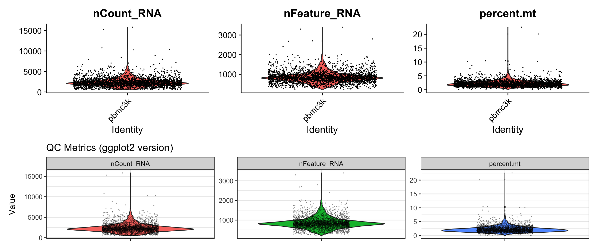
What we learned:
pbmc3k@meta.data as
columnspivot_longer()geom_violin() and overlaid
points with geom_jitter()facet_wrap() to create separate panelsFeature-feature relationships help identify potential issues (e.g., correlation between UMI count and gene count).
# SEURAT WRAPPER VERSION
p1 <- FeatureScatter(pbmc3k, feature1 = "nCount_RNA", feature2 = "nFeature_RNA") +
labs(title = "Seurat wrapper")
# GGPLOT2 VERSION
# Again, we extract from metadata
scatter_data <- pbmc3k@meta.data %>%
select(nCount_RNA, nFeature_RNA, percent.mt)
p2 <- ggplot(scatter_data, aes(x = nCount_RNA, y = nFeature_RNA)) +
geom_point(alpha = 0.5, size = 0.5, color = "steelblue") +
geom_smooth(method = "lm", color = "red", se = FALSE) +
labs(title = "ggplot2 version",
x = "Total UMI Counts",
y = "Number of Genes Detected") +
theme_bw()
# Display side by side
p1 + p2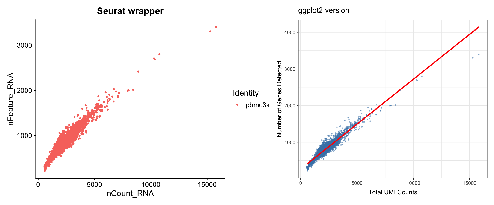
What we learned:
@meta.datageom_smooth()+) makes side-by-side comparison
easyNow let’s continue with the standard Seurat workflow.
# Filter cells based on QC metrics
pbmc3k <- subset(pbmc3k, subset = nFeature_RNA > 200 & nFeature_RNA < 2500 & percent.mt < 5)
# Normalize the data
pbmc3k <- NormalizeData(pbmc3k)
# Find variable features
pbmc3k <- FindVariableFeatures(pbmc3k, selection.method = "vst", nfeatures = 2000)This plot shows the most variable genes, which drive heterogeneity in the dataset.
# SEURAT WRAPPER VERSION
p1 <- VariableFeaturePlot(pbmc3k) +
labs(title = "Seurat wrapper")
# GGPLOT2 VERSION
# Key concept: Variable feature info is stored in pbmc3k@assays$RNA@meta.features
# or we can access it with HVFInfo()
hvf_data <- HVFInfo(pbmc3k) %>%
mutate(gene = rownames(.),
variable = gene %in% VariableFeatures(pbmc3k))
# Get top 10 variable genes to label
top10_genes <- head(VariableFeatures(pbmc3k), 10)
p2 <- ggplot(hvf_data, aes(x = mean, y = variance.standardized)) +
geom_point(aes(color = variable), alpha = 0.5, size = 0.8) +
scale_color_manual(values = c("grey70", "red"),
labels = c("Non-variable", "Variable")) +
geom_text(data = hvf_data %>% filter(gene %in% top10_genes),
aes(label = gene), size = 3, nudge_y = 0.5) +
labs(title = "ggplot2 version",
x = "Average Expression",
y = "Standardized Variance",
color = "Feature Type") +
theme_bw()
# Display side by side
p1 + p2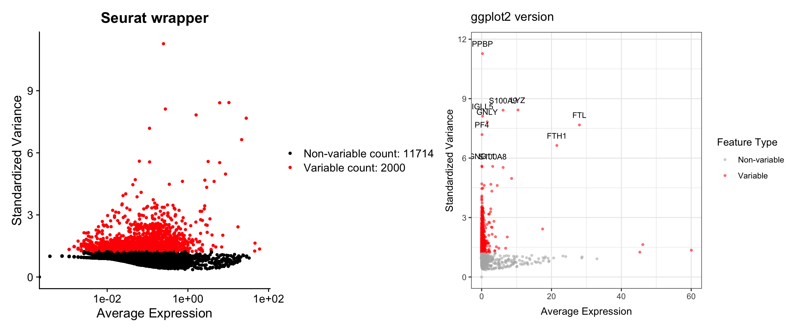
What we learned:
HVFInfo()VariableFeatures()geom_text()# Scale the data
pbmc3k <- ScaleData(pbmc3k)
# Run PCA
pbmc3k <- RunPCA(pbmc3k, features = VariableFeatures(pbmc3k))The elbow plot helps determine how many PCs to use for downstream analysis.
# SEURAT WRAPPER VERSION
p1 <- ElbowPlot(pbmc3k, ndims = 30) +
labs(title = "Seurat wrapper")
# GGPLOT2 VERSION
# Key concept: PCA results are stored in pbmc3k@reductions$pca
# Standard deviations are in pbmc3k@reductions$pca@stdev
pca_variance <- data.frame(
PC = 1:30,
stdev = pbmc3k@reductions$pca@stdev[1:30]
) %>%
mutate(variance_explained = stdev^2)
p2 <- ggplot(pca_variance, aes(x = PC, y = stdev)) +
geom_point(size = 2, color = "steelblue") +
geom_line(color = "steelblue") +
labs(title = "ggplot2 version",
x = "Principal Component",
y = "Standard Deviation") +
theme_bw()
# Display side by side
p1 + p2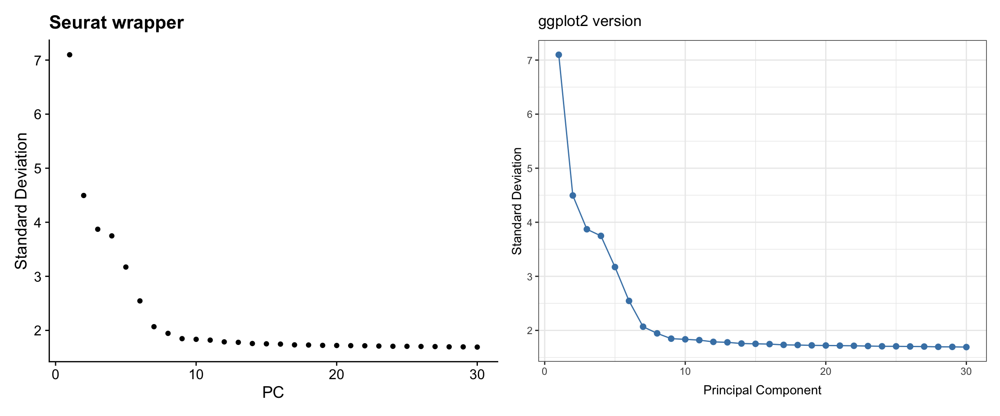
What we learned:
pbmc3k@reductions$pca@stdev slotgeom_point() + geom_line()Visualize cells in PC space to see data structure.
# SEURAT WRAPPER VERSION
p1 <- DimPlot(pbmc3k, reduction = "pca", dims = c(1, 2)) +
labs(title = "Seurat wrapper")
# GGPLOT2 VERSION
# Key concept: Cell embeddings are in pbmc3k@reductions$pca@cell.embeddings
pca_embeddings <- as.data.frame(pbmc3k@reductions$pca@cell.embeddings[, 1:2])
colnames(pca_embeddings) <- c("PC1", "PC2")
pca_embeddings<- cbind(pca_embeddings, pbmc3k@meta.data)
p2 <- ggplot(pca_embeddings, aes(x = PC1, y = PC2)) +
geom_point(alpha = 0.5, size = 0.8, color = "red") +
labs(title = "ggplot2 version",
x = "PC 1", y = "PC 2") +
theme_bw() +
coord_fixed() # Equal aspect ratio
# Display side by side
p1 + p2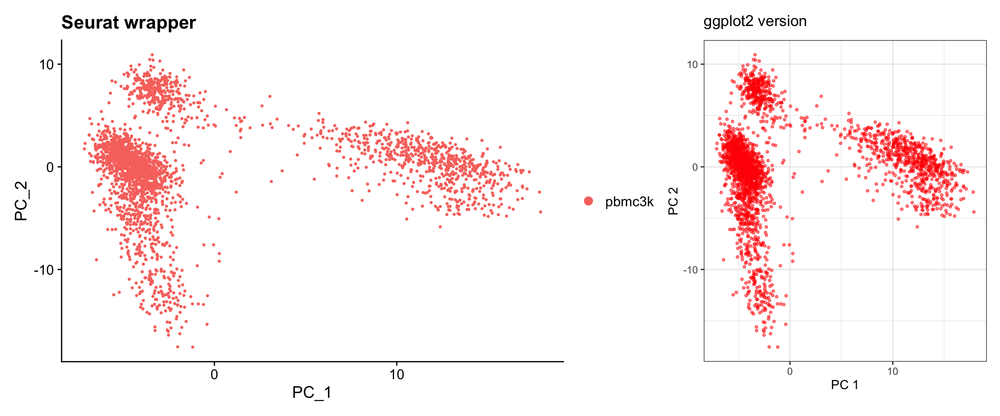
What we learned:
@reductions$pca@cell.embeddings# Build nearest neighbor graph and cluster
pbmc3k <- FindNeighbors(pbmc3k, dims = 1:10)
pbmc3k <- FindClusters(pbmc3k, resolution = 0.5)Modularity Optimizer version 1.3.0 by Ludo Waltman and Nees Jan van Eck
Number of nodes: 2638
Number of edges: 95927
Running Louvain algorithm...
Maximum modularity in 10 random starts: 0.8728
Number of communities: 9
Elapsed time: 0 seconds# Run UMAP
pbmc3k <- RunUMAP(pbmc3k, dims = 1:10)This is one of the most common scRNA-seq visualizations.
# SEURAT WRAPPER VERSION
p1 <- DimPlot(pbmc3k, reduction = "umap", label = TRUE) +
labs(title = "Seurat wrapper") +
NoLegend()
# GGPLOT2 VERSION
# Key concept: UMAP coordinates are in @reductions$umap@cell.embeddings
# Cluster assignments are in @meta.data$seurat_clusters
umap_data <- as.data.frame(pbmc3k@reductions$umap@cell.embeddings)
colnames(umap_data) <- c("UMAP1", "UMAP2")
umap_data$cluster <- pbmc3k@meta.data$seurat_clusters
# Calculate cluster centroids for labels
cluster_centers <- umap_data %>%
group_by(cluster) %>%
summarize(UMAP1 = median(UMAP1),
UMAP2 = median(UMAP2))
p2 <- ggplot(umap_data, aes(x = UMAP1, y = UMAP2, color = cluster)) +
geom_point(alpha = 0.6, size = 0.8) +
geom_text(data = cluster_centers, aes(label = cluster),
size = 5, color = "black", fontface = "bold") +
labs(title = "ggplot2 version") +
theme_bw() +
theme(legend.position = "none") +
coord_fixed()
# Display side by side
p1 + p2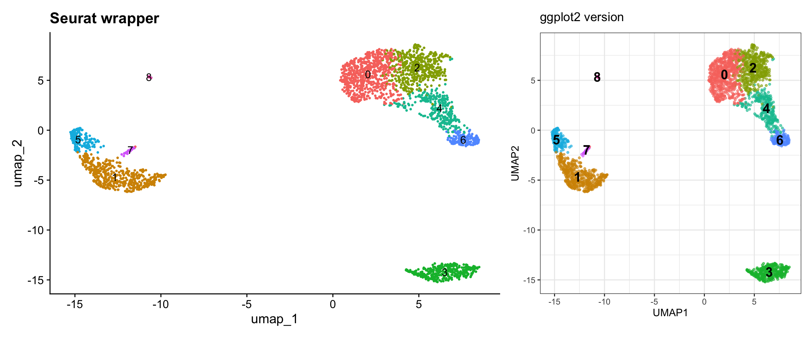
What we learned:
@reductions$umap@cell.embeddings@meta.data$seurat_clustersShow gene expression levels overlaid on UMAP.
# Let's look at some marker genes
genes <- c("CD3D", "CD14", "CD79A")
# SEURAT WRAPPER VERSION
p1 <- FeaturePlot(pbmc3k, features = genes, ncol = 1) +
plot_annotation(title = "Seurat wrapper")
# GGPLOT2 VERSION
# Key concept: Expression data is in the assay, accessed with GetAssayData() or FetchData()
# FetchData() is convenient - it can pull from multiple sources at once
# Get UMAP coordinates and expression values
feature_data <- FetchData(pbmc3k, vars = c("umap_1", "umap_2", genes))
# Reshape for faceting
feature_long <- feature_data %>%
pivot_longer(cols = all_of(genes),
names_to = "gene",
values_to = "expression")
p2 <- ggplot(feature_long, aes(x = umap_1, y = umap_2, color = expression)) +
geom_point(alpha = 0.6, size = 0.5) +
facet_wrap(~ gene, ncol = 1) +
scale_color_gradientn(colors = c("lightgrey", "blue", "red", "darkred")) +
labs(title = "ggplot2 version", color = "Expression") +
theme_bw() +
coord_fixed()
# Display side by side
p1 | p2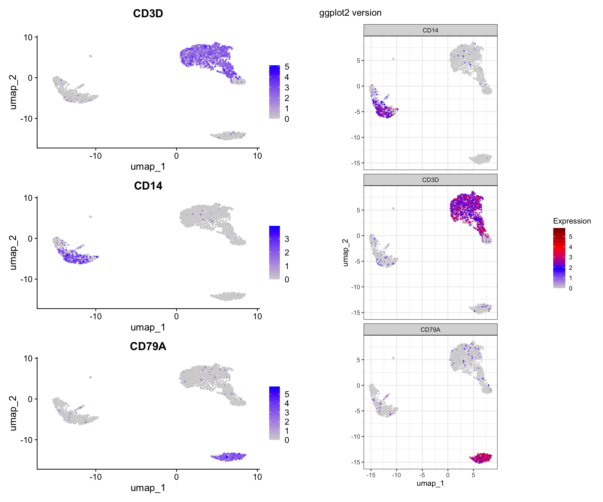
What we learned:
FetchData() is a powerful function that can retrieve:
scale_color_gradientn()Sometimes you want to split visualizations by a metadata variable. Let’s add a mock “treatment” variable to demonstrate.
# Add a mock treatment variable (just for demonstration)
set.seed(42)
pbmc3k$treatment <- sample(c("Control", "Treated"), ncol(pbmc3k), replace = TRUE)
# SEURAT WRAPPER VERSION
p1 <- DimPlot(pbmc3k, reduction = "umap", split.by = "treatment") +
plot_annotation(title = "Seurat wrapper")
# GGPLOT2 VERSION
# Extract UMAP coordinates, clusters, and metadata
umap_split <- as.data.frame(pbmc3k@reductions$umap@cell.embeddings)
colnames(umap_split) <- c("UMAP1", "UMAP2")
umap_split$cluster <- pbmc3k@meta.data$seurat_clusters
umap_split$treatment <- pbmc3k@meta.data$treatment
p2 <- ggplot(umap_split, aes(x = UMAP1, y = UMAP2, color = cluster)) +
geom_point(alpha = 0.6, size = 0.5) +
facet_wrap(~ treatment) +
labs(title = "ggplot2 version") +
theme_bw() +
coord_fixed()
# Display
p1 / p2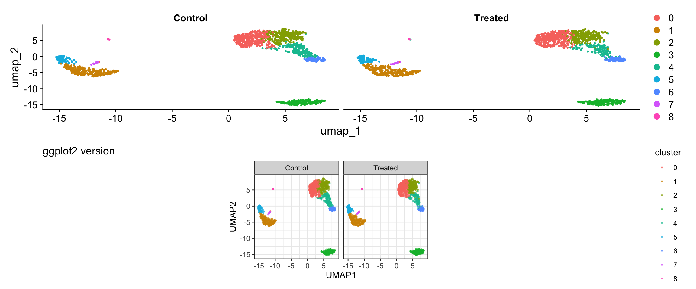
What we learned:
facet_wrap() enables splitting by any variable# Find markers for cluster 0
cluster0_markers <- FindMarkers(pbmc3k, ident.1 = 0, min.pct = 0.25)
# Find all markers
pbmc_markers <- FindAllMarkers(pbmc3k, only.pos = TRUE, min.pct = 0.25, logfc.threshold = 0.25)
# Get top 5 markers per cluster
top5_markers <- pbmc_markers %>%
group_by(cluster) %>%
top_n(n = 5, wt = avg_log2FC)
head(top5_markers, 15)# A tibble: 15 × 7
# Groups: cluster [3]
p_val avg_log2FC pct.1 pct.2 p_val_adj cluster gene
<dbl> <dbl> <dbl> <dbl> <dbl> <fct> <chr>
1 9.57e- 88 2.40 0.447 0.108 1.31e- 83 0 CCR7
2 1.35e- 51 2.14 0.342 0.103 1.86e- 47 0 LEF1
3 2.81e- 44 1.53 0.443 0.185 3.85e- 40 0 PIK3IP1
4 6.27e- 43 1.99 0.33 0.112 8.60e- 39 0 PRKCQ-AS1
5 1.34e- 34 1.96 0.268 0.087 1.84e- 30 0 MAL
6 0 6.65 0.975 0.121 0 1 S100A8
7 0 6.18 0.996 0.215 0 1 S100A9
8 1.03e-295 5.98 0.667 0.027 1.42e-291 1 CD14
9 7.07e-139 7.28 0.299 0.004 9.70e-135 1 FOLR3
10 3.38e-121 6.74 0.277 0.006 4.64e-117 1 S100A12
11 3.44e- 59 1.63 0.651 0.245 4.71e- 55 2 CD2
12 2.97e- 58 2.09 0.42 0.111 4.07e- 54 2 AQP3
13 2.92e- 42 1.52 0.397 0.124 4.00e- 38 2 TRAT1
14 5.03e- 34 1.87 0.263 0.07 6.90e- 30 2 CD40LG
15 2.65e- 20 1.60 0.305 0.136 3.63e- 16 2 CORO1B Show expression of marker genes across clusters.
# Select a few top marker genes
selected_genes <- c("IL7R", "CCR7", "CD14", "LYZ", "MS4A1", "CD8A")
# SEURAT WRAPPER VERSION
p1 <- VlnPlot(pbmc3k, features = selected_genes, ncol = 2, pt.size = 0.1) +
plot_annotation(title = "Seurat wrapper")
# GGPLOT2 VERSION
# Use FetchData to get cluster assignments and gene expression
violin_data <- FetchData(pbmc3k, vars = c("seurat_clusters", selected_genes))
# Reshape to long format
violin_long <- violin_data %>%
pivot_longer(cols = all_of(selected_genes),
names_to = "gene",
values_to = "expression")
p2 <- ggplot(violin_long, aes(x = seurat_clusters, y = expression, fill = seurat_clusters)) +
geom_violin(scale = "width", trim = TRUE) +
facet_wrap(~ gene, scales = "free_y", ncol = 2) +
labs(title = "ggplot2 version",
x = "Cluster", y = "Expression Level") +
theme_bw() +
theme(legend.position = "none")
# Display
print(p1)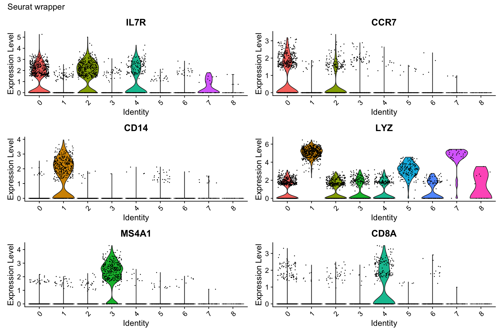
print(p2)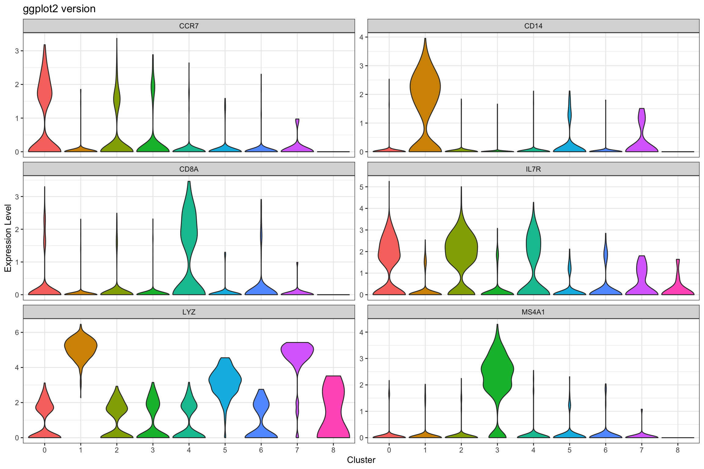
What we learned:
FetchData()pivot_longer() to reshape for facetingscales = "free_y" allows different y-axis scales per
facet (useful when genes have different expression ranges)Heatmaps show expression patterns of marker genes across clusters.
# Get top 3 markers per cluster for a cleaner visualization
top3_markers <- pbmc_markers %>%
group_by(cluster) %>%
top_n(n = 3, wt = avg_log2FC)
# SEURAT WRAPPER VERSION
p1 <- DoHeatmap(pbmc3k, features = top3_markers$gene, size = 3, angle = 90) +
labs(title = "Seurat wrapper") +
theme(axis.text.y = element_text(size = 8))
# GGPLOT2 VERSION
# Key concept: We need the scaled expression matrix
# Get scaled data for the marker genes
scaled_expr <- GetAssayData(pbmc3k, layer = "scale.data")
markers_to_plot <- top3_markers$gene[top3_markers$gene %in% rownames(scaled_expr)]
# Extract scaled expression for these genes
heatmap_data <- as.data.frame(t(as.matrix(scaled_expr[markers_to_plot, ])))
heatmap_data$cluster <- pbmc3k@meta.data$seurat_clusters
heatmap_data$cell <- rownames(heatmap_data)
# Order cells by cluster
heatmap_data <- heatmap_data %>%
arrange(cluster)
# Reshape to long format
heatmap_long <- heatmap_data %>%
pivot_longer(cols = all_of(markers_to_plot),
names_to = "gene",
values_to = "expression")
# Create ordered factors for proper display
heatmap_long$cell <- factor(heatmap_long$cell, levels = unique(heatmap_data$cell))
heatmap_long$gene <- factor(heatmap_long$gene, levels = markers_to_plot)
p2 <- ggplot(heatmap_long, aes(x = cell, y = gene, fill = expression)) +
geom_tile() +
scale_fill_gradient2(low = "blue", mid = "white", high = "red",
midpoint = 0, limits = c(-2, 2)) +
labs(title = "ggplot2 version", x = "Cells", y = "Genes", fill = "Scaled\nExpression") +
theme_minimal() +
theme(axis.text.x = element_blank(),
axis.ticks.x = element_blank(),
axis.text.y = element_text(size = 8),
panel.grid = element_blank())
# Display
print(p1)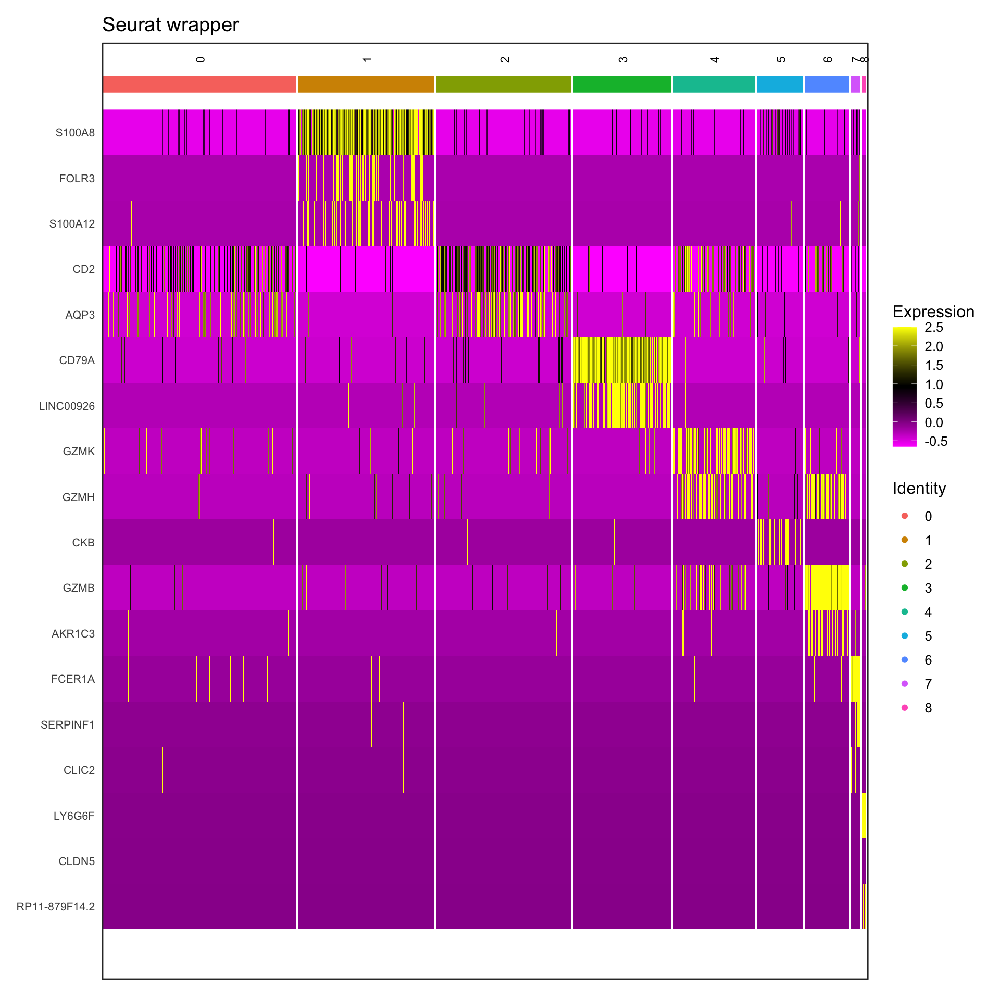
print(p2)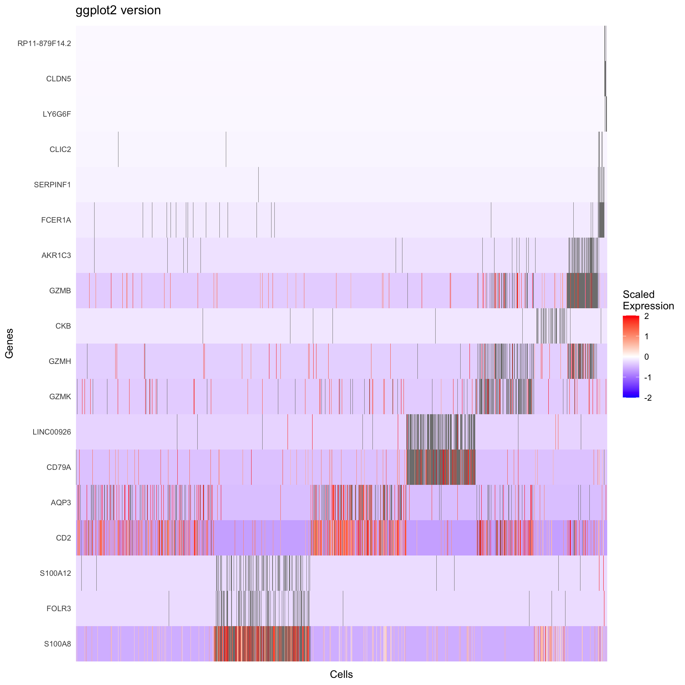
What we learned:
GetAssayData(object, slot = "scale.data")geom_tile() creates heatmapsscale_fill_gradient2() creates a diverging color
scaleDot plots efficiently show both expression level (color) and percentage of cells expressing (size) a gene.
# Select genes to visualize
selected_genes <- c("IL7R", "CCR7", "CD14", "LYZ", "S100A4", "MS4A1",
"CD8A", "FCGR3A", "MS4A7", "GNLY", "NKG7")
# SEURAT WRAPPER VERSION
p1 <- DotPlot(pbmc3k, features = selected_genes) +
labs(title = "Seurat wrapper") +
theme(axis.text.x = element_text(angle = 45, hjust = 1))
# GGPLOT2 VERSION
# We need to calculate:
# 1. Average expression per cluster
# 2. Percentage of cells expressing per cluster
# Get expression data and cluster assignments
dotplot_data <- FetchData(pbmc3k, vars = c("seurat_clusters", selected_genes))
# Calculate summary statistics
dotplot_summary <- dotplot_data %>%
pivot_longer(cols = all_of(selected_genes),
names_to = "gene",
values_to = "expression") %>%
group_by(seurat_clusters, gene) %>%
summarize(
avg_expression = mean(expression),
pct_expressed = sum(expression > 0) / n() * 100,
.groups = "drop"
)
p2 <- ggplot(dotplot_summary, aes(x = gene, y = seurat_clusters)) +
geom_point(aes(size = pct_expressed, color = avg_expression)) +
scale_color_gradient(low = "lightgrey", high = "red") +
scale_size_continuous(range = c(0, 6)) +
labs(title = "ggplot2 version",
x = "Gene", y = "Cluster",
color = "Average\nExpression",
size = "% Expressed") +
theme_bw() +
theme(axis.text.x = element_text(angle = 45, hjust = 1))
# Display
p1 / p2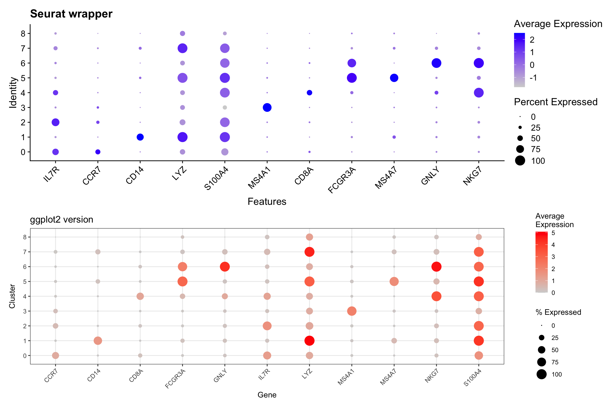
What we learned:
group_by() and summarize() to compute
averages and percentagessize and
color# SEURAT WRAPPER VERSION
p1 <- DimPlot(pbmc3k, reduction = "umap", group.by = "seurat_annotations", label = TRUE, repel = TRUE) +
labs(title = "Seurat wrapper") +
NoLegend()
# GGPLOT2 VERSION
umap_celltype <- as.data.frame(pbmc3k@reductions$umap@cell.embeddings)
colnames(umap_celltype) <- c("UMAP1", "UMAP2")
umap_celltype$celltype <- pbmc3k$seurat_annotations
# Calculate centroids for labels
celltype_centers <- umap_celltype %>%
group_by(celltype) %>%
summarize(UMAP1 = median(UMAP1),
UMAP2 = median(UMAP2))
p2 <- ggplot(umap_celltype, aes(x = UMAP1, y = UMAP2, color = celltype)) +
geom_point(alpha = 0.6, size = 0.8) +
geom_text(data = celltype_centers, aes(label = celltype),
size = 3, color = "black", fontface = "bold",
check_overlap = TRUE) +
labs(title = "ggplot2 version") +
theme_bw() +
theme(legend.position = "right") +
coord_fixed() +
NoLegend()
# Display
p1 + p2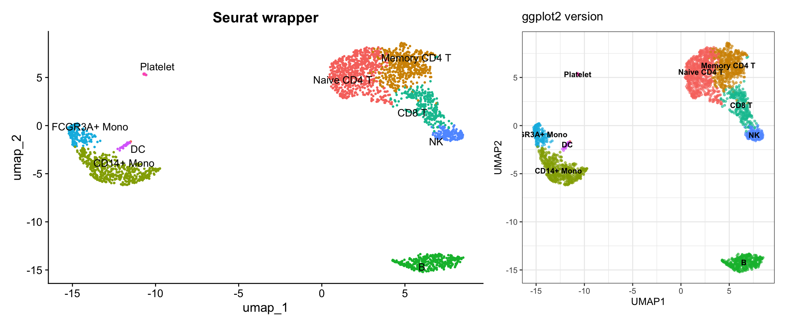
What we learned:
| Data Type | Location | Access Method |
|---|---|---|
| Metadata (QC metrics, clusters, etc.) | object@meta.data |
Direct access or FetchData() |
| Raw counts | object@assays$RNA@counts |
GetAssayData(slot = "counts") |
| Normalized expression | object@assays$RNA@data |
GetAssayData(slot = "data") |
| Scaled expression | object@assays$RNA@scale.data |
GetAssayData(slot = "scale.data") |
| PCA embeddings | object@reductions$pca@cell.embeddings |
Direct access or FetchData("PC_1", "PC_2", ...) |
| UMAP embeddings | object@reductions$umap@cell.embeddings |
Direct access or FetchData("UMAP_1", "UMAP_2") |
| Variable features | Internal | VariableFeatures() or HVFInfo() |
| Combined data | Multiple sources | FetchData() - most convenient! |
Use Seurat wrappers when:
Use ggplot2 when:
The power of understanding how to extract data from Seurat objects means you’re not limited to the visualizations provided by the package. You can:
Practice exercise: Try recreating other Seurat plots we didn’t cover, such as:
RidgePlot() - Ridge plots for gene expressionVizDimLoadings() - Top genes in PC loadingsThe key is always the same: understand where the data lives, extract it to a tidy dataframe, and use ggplot2 to visualize it!
sessionInfo()R version 4.4.1 (2024-06-14)
Platform: aarch64-apple-darwin20
Running under: macOS Sonoma 14.1
Matrix products: default
BLAS: /Library/Frameworks/R.framework/Versions/4.4-arm64/Resources/lib/libRblas.0.dylib
LAPACK: /Library/Frameworks/R.framework/Versions/4.4-arm64/Resources/lib/libRlapack.dylib; LAPACK version 3.12.0
locale:
[1] en_US.UTF-8/en_US.UTF-8/en_US.UTF-8/C/en_US.UTF-8/en_US.UTF-8
time zone: America/New_York
tzcode source: internal
attached base packages:
[1] stats graphics grDevices utils datasets methods base
other attached packages:
[1] patchwork_1.2.0 tidyr_1.3.1 dplyr_1.1.4
[4] ggplot2_3.5.1 pbmc3k.SeuratData_3.1.4 SeuratData_0.2.2.9001
[7] Seurat_5.1.0 SeuratObject_5.0.2 sp_2.1-4
[10] workflowr_1.7.1
loaded via a namespace (and not attached):
[1] RColorBrewer_1.1-3 rstudioapi_0.16.0 jsonlite_1.8.8
[4] magrittr_2.0.3 ggbeeswarm_0.7.2 spatstat.utils_3.1-0
[7] farver_2.1.2 rmarkdown_2.27 fs_1.6.4
[10] vctrs_0.6.5 ROCR_1.0-11 spatstat.explore_3.3-2
[13] htmltools_0.5.8.1 sass_0.4.9 sctransform_0.4.1
[16] parallelly_1.38.0 KernSmooth_2.23-24 bslib_0.8.0
[19] htmlwidgets_1.6.4 ica_1.0-3 plyr_1.8.9
[22] plotly_4.10.4 zoo_1.8-12 cachem_1.1.0
[25] whisker_0.4.1 igraph_2.0.3 mime_0.12
[28] lifecycle_1.0.4 pkgconfig_2.0.3 Matrix_1.7-0
[31] R6_2.5.1 fastmap_1.2.0 fitdistrplus_1.2-1
[34] future_1.34.0 shiny_1.9.0 digest_0.6.36
[37] colorspace_2.1-1 ps_1.7.7 rprojroot_2.0.4
[40] tensor_1.5 RSpectra_0.16-2 irlba_2.3.5.1
[43] labeling_0.4.3 progressr_0.14.0 fansi_1.0.6
[46] spatstat.sparse_3.1-0 mgcv_1.9-1 httr_1.4.7
[49] polyclip_1.10-7 abind_1.4-5 compiler_4.4.1
[52] withr_3.0.0 fastDummies_1.7.4 highr_0.11
[55] MASS_7.3-60.2 rappdirs_0.3.3 tools_4.4.1
[58] vipor_0.4.7 lmtest_0.9-40 beeswarm_0.4.0
[61] httpuv_1.6.15 future.apply_1.11.2 goftest_1.2-3
[64] glue_1.8.0 callr_3.7.6 nlme_3.1-164
[67] promises_1.3.0 grid_4.4.1 Rtsne_0.17
[70] getPass_0.2-4 cluster_2.1.6 reshape2_1.4.4
[73] generics_0.1.3 gtable_0.3.5 spatstat.data_3.1-2
[76] data.table_1.15.4 utf8_1.2.4 spatstat.geom_3.3-2
[79] RcppAnnoy_0.0.22 ggrepel_0.9.5 RANN_2.6.1
[82] pillar_1.9.0 stringr_1.5.1 limma_3.60.4
[85] spam_2.10-0 RcppHNSW_0.6.0 later_1.3.2
[88] splines_4.4.1 lattice_0.22-6 survival_3.6-4
[91] deldir_2.0-4 tidyselect_1.2.1 miniUI_0.1.1.1
[94] pbapply_1.7-2 knitr_1.48 git2r_0.35.0
[97] gridExtra_2.3 scattermore_1.2 xfun_0.52
[100] statmod_1.5.0 matrixStats_1.3.0 stringi_1.8.4
[103] lazyeval_0.2.2 yaml_2.3.10 evaluate_0.24.0
[106] codetools_0.2-20 tibble_3.2.1 cli_3.6.3
[109] uwot_0.2.2 xtable_1.8-4 reticulate_1.38.0
[112] munsell_0.5.1 processx_3.8.4 jquerylib_0.1.4
[115] Rcpp_1.0.13 globals_0.16.3 spatstat.random_3.3-1
[118] png_0.1-8 ggrastr_1.0.2 spatstat.univar_3.0-0
[121] parallel_4.4.1 presto_1.0.0 dotCall64_1.1-1
[124] listenv_0.9.1 viridisLite_0.4.2 scales_1.3.0
[127] ggridges_0.5.6 crayon_1.5.3 leiden_0.4.3.1
[130] purrr_1.0.2 rlang_1.1.4 cowplot_1.1.3
sessionInfo()R version 4.4.1 (2024-06-14)
Platform: aarch64-apple-darwin20
Running under: macOS Sonoma 14.1
Matrix products: default
BLAS: /Library/Frameworks/R.framework/Versions/4.4-arm64/Resources/lib/libRblas.0.dylib
LAPACK: /Library/Frameworks/R.framework/Versions/4.4-arm64/Resources/lib/libRlapack.dylib; LAPACK version 3.12.0
locale:
[1] en_US.UTF-8/en_US.UTF-8/en_US.UTF-8/C/en_US.UTF-8/en_US.UTF-8
time zone: America/New_York
tzcode source: internal
attached base packages:
[1] stats graphics grDevices utils datasets methods base
other attached packages:
[1] patchwork_1.2.0 tidyr_1.3.1 dplyr_1.1.4
[4] ggplot2_3.5.1 pbmc3k.SeuratData_3.1.4 SeuratData_0.2.2.9001
[7] Seurat_5.1.0 SeuratObject_5.0.2 sp_2.1-4
[10] workflowr_1.7.1
loaded via a namespace (and not attached):
[1] RColorBrewer_1.1-3 rstudioapi_0.16.0 jsonlite_1.8.8
[4] magrittr_2.0.3 ggbeeswarm_0.7.2 spatstat.utils_3.1-0
[7] farver_2.1.2 rmarkdown_2.27 fs_1.6.4
[10] vctrs_0.6.5 ROCR_1.0-11 spatstat.explore_3.3-2
[13] htmltools_0.5.8.1 sass_0.4.9 sctransform_0.4.1
[16] parallelly_1.38.0 KernSmooth_2.23-24 bslib_0.8.0
[19] htmlwidgets_1.6.4 ica_1.0-3 plyr_1.8.9
[22] plotly_4.10.4 zoo_1.8-12 cachem_1.1.0
[25] whisker_0.4.1 igraph_2.0.3 mime_0.12
[28] lifecycle_1.0.4 pkgconfig_2.0.3 Matrix_1.7-0
[31] R6_2.5.1 fastmap_1.2.0 fitdistrplus_1.2-1
[34] future_1.34.0 shiny_1.9.0 digest_0.6.36
[37] colorspace_2.1-1 ps_1.7.7 rprojroot_2.0.4
[40] tensor_1.5 RSpectra_0.16-2 irlba_2.3.5.1
[43] labeling_0.4.3 progressr_0.14.0 fansi_1.0.6
[46] spatstat.sparse_3.1-0 mgcv_1.9-1 httr_1.4.7
[49] polyclip_1.10-7 abind_1.4-5 compiler_4.4.1
[52] withr_3.0.0 fastDummies_1.7.4 highr_0.11
[55] MASS_7.3-60.2 rappdirs_0.3.3 tools_4.4.1
[58] vipor_0.4.7 lmtest_0.9-40 beeswarm_0.4.0
[61] httpuv_1.6.15 future.apply_1.11.2 goftest_1.2-3
[64] glue_1.8.0 callr_3.7.6 nlme_3.1-164
[67] promises_1.3.0 grid_4.4.1 Rtsne_0.17
[70] getPass_0.2-4 cluster_2.1.6 reshape2_1.4.4
[73] generics_0.1.3 gtable_0.3.5 spatstat.data_3.1-2
[76] data.table_1.15.4 utf8_1.2.4 spatstat.geom_3.3-2
[79] RcppAnnoy_0.0.22 ggrepel_0.9.5 RANN_2.6.1
[82] pillar_1.9.0 stringr_1.5.1 limma_3.60.4
[85] spam_2.10-0 RcppHNSW_0.6.0 later_1.3.2
[88] splines_4.4.1 lattice_0.22-6 survival_3.6-4
[91] deldir_2.0-4 tidyselect_1.2.1 miniUI_0.1.1.1
[94] pbapply_1.7-2 knitr_1.48 git2r_0.35.0
[97] gridExtra_2.3 scattermore_1.2 xfun_0.52
[100] statmod_1.5.0 matrixStats_1.3.0 stringi_1.8.4
[103] lazyeval_0.2.2 yaml_2.3.10 evaluate_0.24.0
[106] codetools_0.2-20 tibble_3.2.1 cli_3.6.3
[109] uwot_0.2.2 xtable_1.8-4 reticulate_1.38.0
[112] munsell_0.5.1 processx_3.8.4 jquerylib_0.1.4
[115] Rcpp_1.0.13 globals_0.16.3 spatstat.random_3.3-1
[118] png_0.1-8 ggrastr_1.0.2 spatstat.univar_3.0-0
[121] parallel_4.4.1 presto_1.0.0 dotCall64_1.1-1
[124] listenv_0.9.1 viridisLite_0.4.2 scales_1.3.0
[127] ggridges_0.5.6 crayon_1.5.3 leiden_0.4.3.1
[130] purrr_1.0.2 rlang_1.1.4 cowplot_1.1.3